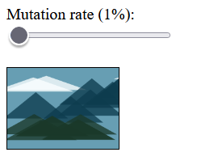
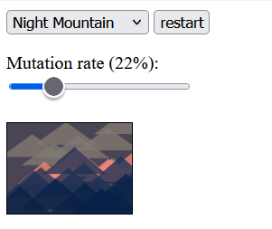
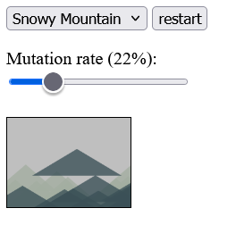

Experiment 5 - Evolutionary Impressions
Description
With this experiment, I sought out to create three different generatorsto create
procedural generations of selected images. utilizing a "mutation" feature, the image's
components can move & evolve over time, while still keeping a cohesive
form.



Technical
Describe in detail what you did technically and how it works?
To stand out from the crowd, who were likley using stretched circles &
rectangles to form their images, we decided to utilize triangles. Selecting
images that would match our shape, we chose to simulate diffreent variations of mountain
ranges, but each with a differing theme (night sky, snow & lake respectivley). Through the usage
of the mutation slider, one may generate variations of the irigonal image at an increased rate.\
The reset button may return the image to it's origional state.
ASzdfxcgbhnjkm,l;.'/'
Link to Generator
Reflection
This experiment was quite an interesting experience. I was quite lost at first, mostly because our team was unsure how to approach this project. While we are meant to create an impressionist image generator, we at first believed we had to scan the image itself to generate an impression! It was much of a relief after getting some support from friends on the class discord, where we realized we did not have to do such a thing and that we had very few tools to do such a thing regardless. Overall, I am very proud of our accomplishments here today, although we are still a tad confused about why the mutation feature was necessary. Although, I suppose, after ignoring the slight risk of giving the user a seizure, it is an informative way of studying how data can evolve over time while still maintaining a cohesive and recognizable general image.